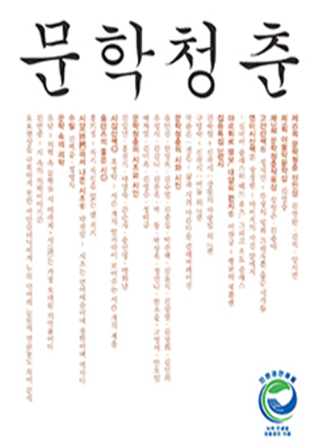
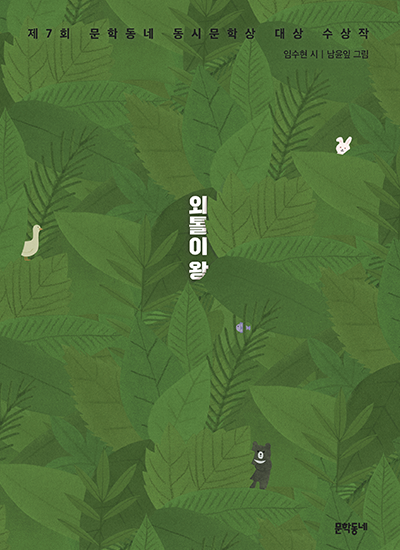
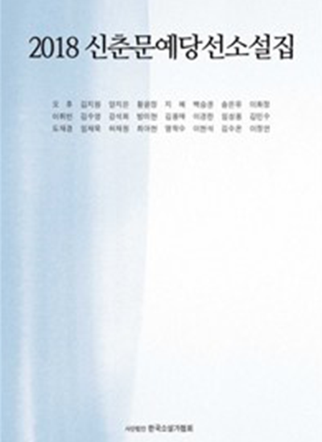

작가 및 공모작 소개
-
- 김석
- 2019년 9월 당선
- 제10회 문학청춘 신인상
- 김석 시의 침묵은 그만큼 강렬하고 그만큼 순수하다. 시에 대한 인식이 점점 희미해지는 이 시대에, 그 강렬한 순수가 천상 병으로 지속되길 기대하는 마음은 그래서 간절할 수밖에 없다. - 오홍진 문학평론가
- 
-
- 임수현
- 2019년 1월 당선
- 제7회 문학동네 동시문학상
- 문학동네 동시문학상 대상 수상작 『외톨이 왕』은 '환상성'을 '동시를 수직적 상상력으로 끌어올리는 역동적인 도르래'로 삼아 시의 긴장을 한껏 끌어올렸다는 평을 받으며 문학동네 동시문학상의 일곱 번째 대상을 수상하였다.
- 
-
- 이화정
- 2018년 1월 당선
- 2018 국제신문 신춘문예
- 단편소설 당선작 『천사의 손길』은 이야기가 평면적이고 직접적이라는 지적이 있었지만, 사건을 드러내는 방식에 추리기법을 동원해 끝까지 긴장감을 잘 이끌었다는 점을 높이 샀다는 평을 받았다.
- 